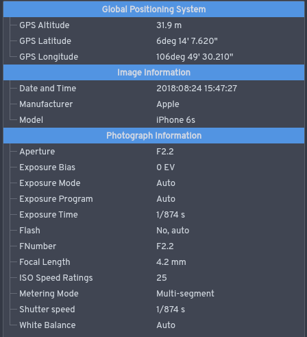
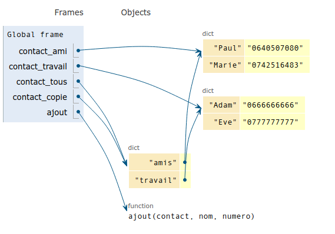
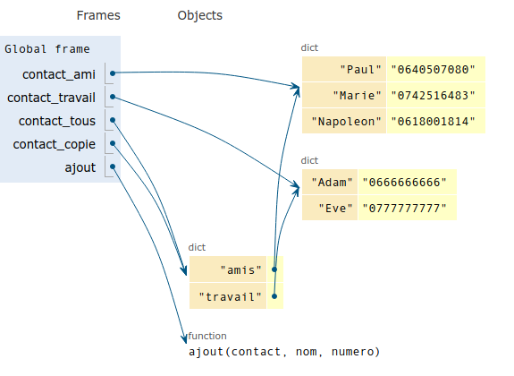

- Crédits
- p-uplets nommés et dictionnaires
- Un exemple de dictionnaire : les metadonnées EXIF d’une photo numérique
- Création de dictionnaire
- Accès, ajout, suppression d’élément dans un dictionnaire
- Parcours de dictionnaire
- Références partagées et mutabilité
- Performance
- Synthèse
Crédits⚓︎
Ce cours est inspiré du chapitre 14 du manuel NSI de la collection Tortue chez Ellipse, auteurs : Ballabonski, Conchon, Filliatre, N’Guyen. J’ai également consulté le prepabac Première NSI de Guillaume Connan chez Hatier, le document ressource eduscol sur les types construits et le livre **Fluent Python*.*
Tous les exemples du cours peuvent être testés dans le fichier exemples_cours_dictionnaires_eleves.py.
p-uplets nommés et dictionnaires⚓︎
Exemple 1
Dans le TP sur les p-uplets (nommés aussi tuples) on a travaillé sur un fichier airports-reduit.csv qui contient les enregistrements nom;latitude;longitude;altitude;code_pays pour 57302 aéroports et on a extrait cette série dans un tableau de tuples. Par exemple le tuple correspondant à l'aéroport Saint-Exupéry est :
1 2 3 4 5 | |
Pour traiter cette information, il faut connaître la signification de chaque élément (appelé aussi champ) du tuple puisqu'on y accède par son index entier : 0 pour le 'nom', 1 pour la latitude etc ....
Il serait plus lisible de disposer d'un tuple à champs nommés et de pouvoir accéder à la valeur d'un champ par son nom. C'est le dernier type construit de données que nous allons étudier.
1 2 3 4 5 | |
Définition 1
Un p-uplet nommé (ou tuple nommé) est un p-uplet dont chaque élément (ou champ) est repéré par un nom et non par un entier. Ces noms sont appelés clefs ou descripteurs du p-uplet nommé. Celui-ci s'écrit entre accolades avec une virgule séparant chaque paire constituée de la clef et de la valeur de la composante séparées par le symbole :.
En [Python][Python], les p-uplets nommés sont implémentés par les dictionnaires de type dict. Par la suite nous parlerons de dictionnaire plutôt que de p-uplet nommé.
Comme l'accès aux valeurs s'effectue par les noms/clefs, comme dans un dictionnaire où chaque nom est associé à sa définition, on parle aussi de tableaux associatifs.
Un dictionnaire n'est pas une séquence ordonnée d'éléments, l'accès s'effectue uniquement par clef.
>>> python = {'apparition' : 1993, 'version' : '3.8', 'createur' : 'Guido Van Rossum'}
>>> python['createur']
'Guido Van Rossum'
>>> len(python)
3
>>> python[2]
Traceback (most recent call last):
File "<stdin>", line 1, in <module>
KeyError: 2
Un exemple de dictionnaire : les metadonnées EXIF d’une photo numérique⚓︎
Les photos prises avec un appareil numérique contiennent de nombreuses
informations. Dans un fichier image, par exemple au format jpeg, sont
stockées des données non seulement sur l’image elle-même mais aussi des
metadonnées sur l’appareil, le logiciel utilisé, et en particulier
des données
EXIF
(Exchangeable Image File Format). Une partie est accessible dans les
propriétés de fichier ou avec un logiciel de traitement d’images. Les
spécifications sont gérées par un organisme japonais, le JEITA, qui
définit différents dictionnaires de référence permettant d’accéder à ces
données. Les clés (les tags) et les valeurs sont des nombres écrits dans
l’entête du fichier. Les dictionnaires donnent l’interprétation de ces
clés. Par exemple la clé 256 a pour valeur ‘Width’ , la largeur de
l’image en pixel et la clé 257 a pour valeur ‘Length’ , la hauteur de
l’image en pixel.

Source : https://commons.wikimedia.org/wiki/File:DigiKam_EXIF_information_screenshot.png
{kind=link}
Exercice 1
On peut extraite les données EXIF avec le logiciel exiftool, le plugin Firefox exifviewer ou sous forme de dictionnaire [Python][Python] avec le module pyexiftool.
Le script Python exiftool_test.py ci-dessous contient une fonction qui extrait les données EXIF d'un fichier image passé en paramètre, sous la forme de dictionnaire.
#!/usr/bin/env python3
# -*- coding: utf-8 -*-
import sys
import exiftool
def extraire_exif(fichier):
et = exiftool.ExifTool()
et.start()
metadata = et.get_metadata(fichier)
et.terminate()
return metadata
#code client exécuté si script exécuté directement
if __name__ == "__main__":
#extrait les données exif du fichier passé en paramètre
print(extraire_exif(sys.argv[1]))
- Télécharger la photo http://frederic-junier.org/SNT/images/20181230_162625.jpg.
- Extraire ses données EXIF avec exiftool ou le script [Python][Python], puis retrouver la commune où elle a été prise. Voici une partie du dictionnaire obtenu :
fjunier@fjunier:~/sandbox$ sudo apt install libimage-exiftool-perl fjunier@fjunier:~/sandbox$ pip3 install --user pyexiftool fjunier@fjunier:~/sandbox$ chmod +x exiftool_test.py fjunier@fjunier:~/sandbox$ ls -l exiftool_test.py -rwxrwxr-x 1 fjunier fjunier 355 févr. 24 21:50 exiftool_test.py fjunier@fjunier:~/sandbox$ ./exiftool_test.py image_mystere.jpg {..., 'EXIF:Make': 'samsung', 'EXIF:Model': 'SM-G930F', 'EXIF:Orientation': 1, 'EXIF:XResolution': 72, 'EXIF:YResolution': 72, 'EXIF:ResolutionUnit': 2, 'EXIF:Software': 'G930FXXU3ERL3', 'EXIF:ModifyDate': '2018:12:30 16:26:24', 'EXIF:YCbCrPositioning': 1, 'EXIF:ExposureTime': 0.0005733944954, 'EXIF:FNumber': 1.7, 'EXIF:ExposureProgram': 2, 'EXIF:ISO': 50, 'EXIF:ExifVersion': '0220', 'EXIF:DateTimeOriginal': '2018:12:30 16:26:24', 'EXIF:CreateDate': '2018:12:30 16:26:24', 'EXIF:ComponentsConfiguration': '1 2 3 0', 'EXIF:ShutterSpeedValue': '0.000572673315054629', 'EXIF:ApertureValue': 1.6993699982773, 'EXIF:BrightnessValue': 8.36, 'EXIF:ExposureCompensation': 0, 'EXIF:MaxApertureValue': 1.6993699982773, 'EXIF:MeteringMode': 2, 'EXIF:Flash': 0, 'EXIF:FocalLength': 4.2, 'EXIF:UserComment': '', 'EXIF:SubSecTime': '0999', ...., 'EXIF:FlashpixVersion': '0100', 'EXIF:ColorSpace': 1, 'EXIF:ExifImageWidth': 4032, 'EXIF:ExifImageHeight': 3024, ..., 'EXIF:GPSVersionID': '2 2 0 0', 'EXIF:GPSLatitudeRef': 'N', 'EXIF:GPSLatitude': 42.4947222222222, 'EXIF:GPSLongitudeRef': 'E', 'EXIF:GPSLongitude': 3.13, 'EXIF:GPSAltitudeRef': 0, 'EXIF:GPSAltitude': 123, 'EXIF:GPSTimeStamp': '15:26:35','EXIF:GPSDateStamp': '2018:12:30', .... }
{kind=link}
Création de dictionnaire⚓︎
Méthode 1
Il existe plusieurs façons de construire un dictionnaire :
- Par extension : On peut utiliser la forme littérale avec les accolades
{et}qui entourent la série des pairesclef : valeurou le constructeurdictqui peut convertir en dictionnaire une séquence detuplede la forme(clef, valeur).
>>> processeur1 = {'annee' : 1974, 'fabricant' : 'Intel', 'Frequence' : '2 MHz','gravure' : '6000 nm', 'architecture' : '8080'}
>>> processeur2 = dict([('annee', 1978), ('fabricant', 'Intel'),('Frequence','5 MHz'),('gravure','3 micrometres'),('architecture','8086')])
>>> processeur2
{'annee': 1978, 'fabricant': 'Intel', 'Frequence': '5 MHz', 'gravure': '3000 nm', 'architecture': '8086'}
>>> processeur1['gravure']
'6000 nm'
>>> processeur2['gravure']
'3000 nm'
- Par compréhension : La syntaxe est la même que pour les tableaux de type
listen remplaçant les parenthèses par des accolades. On peut récupérer les pairesclef : valeuren parcourant un tableau detuple.
>>> tab_tuple = [('annee', 1989), ('fabricant', 'Intel'),('Frequence','25 MHz'),('gravure','600 nm'),('architecture','80486')]
>>> processeur3 = { clef : valeur for clef, valeur in tab_tuple }
>>> processeur3
{'annee': 1989, 'fabricant': 'Intel', 'Frequence': '25 MHz', 'gravure': '600 nm', 'architecture': '80486'}
Exercice 2
La fonction ord associe à un caractère son point de code Unicode et sa réciproque est la fonction chr.
>>> ord('a'), chr(97)
(97, 'a')
>>> [chr(k) for k in range(97, 97 + 10)]
['a', 'b', 'c', 'd', 'e', 'f', 'g', 'h', 'i', 'j']
Donner des expressions qui permettent de définir les dictionnaires ci-dessous par compréhension :
>>> ordinal
{'a': 97, 'b': 98, 'c': 99, 'd': 100, 'e': 101, 'f': 102, 'g': 103, 'h': 104, 'i': 105, 'j': 106}
>>> caractere
{97: 'a', 98: 'b', 99: 'c', 100: 'd', 101: 'e', 102: 'f', 103: 'g', 104: 'h', 105: 'i', 106: 'j'}
Accès, ajout, suppression d’élément dans un dictionnaire⚓︎
Méthode 2
- L'accès, la modification, l'ajout d'un élément se fait avec l'opérateur crochet :
dico[clef]renvoie la valeur appairée avec la clef donnée dans le dictionnairedico. Le nombre d'éléments est donné par la fonctionlen, mais les éléments sont indexés par les clefs et non par des entiers : il n'y a pas de notion d'ordre dans un dictionnaire. Comme les tableaux de typelistet contrairement aux p-uplets de typetuple, les dictionnaires de typedictsont modifiables après modification , on dit qu'ils sont mutables. Un dictionnaire peut être construit par ajout successif de pairesclef : valeurà partir du dictionnaire vide{}. Enfin, on peut supprimer un élément si on connaît saclefavecdel dico[clef].
>>> nobel2019 = {}
>>> nobel2019['Littérature'] = 'Peter Handke'
>>> nobel2019
{'Littérature': 'Peter Handke'}
>>> nobel2019['Paix'] = 'Kim Joon Hyun'
>>> nobel2019
{'Littérature': 'Peter Handke', 'Paix': 'Kim Joon Hyun'}
>>> nobel2019['Paix'] = 'Abiy Ahmed'
>>> nobel2019
{'Littérature': 'Peter Handke', 'Paix': 'Abiy Ahmed'}
>>> nobel2019['Maths'] = 'Cédric Villani'
>>> nobel2019
{'Littérature': 'Peter Handke', 'Paix': 'Abiy Ahmed', 'Maths': 'Cédric Villani'}
>>> del nobel2019['Maths']
>>> nobel2019
{'Littérature': 'Peter Handke', 'Paix': 'Abiy Ahmed'}
- Parce qu'un dictionnaire est implémenté par une table de hachage, ses clefs doivent, nécessairement être immutables (plus précisément récursivement immutables s'il s'agit de structures imbriquées et encore plus précisément hachables). Une valeur est immutable si elle ne peut pas être modifiée après sa création.
Les types de base
int,float,boolet les types construitstuple,strsont immutables mais pas les typeslistetdict(un dictionnaire ne peut pas être une clef de dictionnaire).
>>> jouet =dict()
>>> jouet[2] = 'clef de type int'
>>> jouet[True] = 'clef de type bool'
>>> jouet[(1,2)] = 'clef de type tuple'
>>> jouet
{2: 'clef de type int', True: 'clef de type bool', (1, 2): 'clef de type tuple'}
>>> jouet[[1,2]] = 'clef de type list -> impossible'
Traceback (most recent call last):
File "<stdin>", line 1, in <module>
TypeError: unhashable type: 'list'
- Une dictionnaire ne peut pas être une clef, mais peut être une valeur dans un autre dictionnaire. On peut définir toutes sortes de structures imbriquées comme des tableaux de dictionnaires ...
>>> vols = {'Lisbonne': {'heure': '21:10','num': 'EJU7674','compagnie': 'EASYJET'},
... 'Vienne': {'heure': '21:25','num': 'OS430','compagnie': 'AUSTRIAN AIRLINES'},
... 'Londres': {'heure': '21:55','num': 'BA357','compagnie': 'BRITISH AIRWAYS'}}
>>> vols['Londres']
{'heure': '21:55', 'num': 'BA357', 'compagnie': 'BRITISH AIRWAYS'}
>>> tab_dico_airports
[{'nom': 'Total Rf Heliport','latitude': '40.07080078125', 'longitude': '-74.93360137939453',
'altitude': '11', 'code_pays': 'US'},
{'nom': 'Aero B Ranch Airport', 'latitude': '38.704022', 'longitude': '-101.473911',
'altitude': '3435', 'code_pays': 'US'}]
- Avec l'opérateur crochet, si une clef n'appartient pas à un dictionnaire, une exception (erreur en [Python][Python]) est levée. La méthode
getpermet de retourner la valeurNonepar défaut si on ne veut pas d'erreur.
>>> prix_turing2006 = {'nom' : 'Frances Allen', 'sujet' : 'Optimisation des compilateurs'}
>>> prix_turing2006['pays']
Traceback (most recent call last):
File "<stdin>", line 1, in <module>
KeyError: 'pays'
>>> prix_turing2006.get('pays')
Exercice 3
QCM de type E3C 2.
-
Question 1 Comment peut-on accéder à la valeur associée à une clé dans un dictionnaire ?
Réponses
-
A) il faut parcourir le dictionnaire avec une boucle à la recherche de la clé
-
B) on peut y accéder directement à partir de la clé
-
C) on ne peut pas accéder à une valeur contenue dans un dictionnaire à partir d'une clé
-
D) il faut d'abord déchiffrer la clé pour accéder à un dictionnaire
-
-
Question 2 On a défini un dictionnaire :
contacts = {'Paul': '0601010182', 'Jacques': '0602413824', 'Claire': '0632451153'}Quelle instruction écrire pour ajouter à ce dictionnaire un nouveau contact nommé Juliette avec le numéro de téléphone '0603040506' ?
Réponses
A) 'Juliette': '0603040506'
B) contacts.append('Juliette': '0603040506')
C) contacts['Juliette'] = '0603040506'
D) contacts.append('Juliette', '0603040506')
-
Question 3 Considérons le dictionnaire suivant :
resultats = {'Paul':5 , 'Amina':1 , 'Léon' : 9 , 'Benoit':3}Quelle affirmation est correcte ?
Réponses
-
A) resultats['Amina'] vaut 1
-
B) resultats[1] vaut 'Amina'
-
C) 'Paul' est une valeur de ce dictionnaire
-
D) 9 est une clé de ce dictionnaire
-
-
Question 4 On définit le dictionnaire
d = {'a': 1, 'b': 2, 'c': 3, 'z':26}. Quelle expression permet de récupérer la valeur de la clé'z'?Réponses
- A)
d[4]B)d[26]C)d[z]D)d['z']
- A)
-
Question 5 On définit ainsi une variable t :
t = [ {'id':1, 'age':23, 'sejour':'PEKIN'}, {'id':2, 'age':27, 'sejour':'ISTANBUL'}, {'id':3, 'age':53, 'sejour':'LONDRES'}, {'id':4, 'age':41, 'sejour':'ISTANBUL'}, {'id':5, 'age':62, 'sejour':'RIO'}, {'id':6, 'age':28, 'sejour':'ALGER'}]Quelle affirmation est correcte ?
Réponses
-
A) t est une liste de listes B) t est une liste de dictionnaires
-
C) t est un dictionnaire de listes D) t est une liste de tuples
-
Parcours de dictionnaire⚓︎
Méthode 3
Il existe trois façons de parcourir un dictionnaire. Dans les exemples, on utilisera un dictionnaire qui représente un annuaire :
>>> dico = { 'Paul' : '0640507080', 'Marie' : '0742516483', 'Hicham' : '0987416543'}
-
Parcours par clefs :
-
Comme pour les types
list,strettuple, les dictionnaires sont itérables avec la syntaxefor clef in dicode typelistoutuple, mais on ne parcourt ainsi que les clefs. On peut aussi utiliser la méthodekeys. À partir des clefs on peut retrouver les valeurs.>>> for clef in dico: ... print("Clef -> ", clef) ... Clef -> Paul Clef -> Marie Clef -> Hicham >>> for clef in dico.keys(): ... print("Clef ->", clef, " Valeur ->", dico[clef]) ... Clef -> Paul Valeur -> 0640507080 Clef -> Marie Valeur -> 0742516483 Clef -> Hicham Valeur -> 0987416543 -
L'ordre de parcours n'est pas forcément l'ordre d'insertion car un dictionnaire n'est pas ordonné. (même si c'est vrai à partir de Python 3.8). Ainsi, on ne peut pas parcourir un dictionnaire par index avec
for k in range(len(dico)).>>> for k in range(len(dico)): ... print(dico[k]) ... Traceback (most recent call last): File "<stdin>", line 2, in <module> KeyError: 0
-
-
Parcours par valeurs :
On peut parcourir un dictionnaire par valeurs avec sa méthode values. À partir des valeurs on ne peut cependant pas retrouver les clefs.
>>> for val in dico.values():
... print("Valeur -> ", val)
...
Valeur -> 0640507080
Valeur -> 0742516483
Valeur -> 0987416543
- Parcours par paires (clef, valeur) :
On peut parcourir un dictionnaire par paires (clef, valeur) valeurs avec sa méthode items. On utilise le mécanisme de tuple unpacking dans la boucle for.
>>> for (clef, val) in dico.items():
... print("Clef ->", clef, " Valeur ->", val)
...
Clef -> Paul Valeur -> 0640507080
Clef -> Marie Valeur -> 0742516483
Clef -> Hicham Valeur -> 0987416543
Exercice 4
On considère le dictionnaire :
dico = {"a" : True, "b" : False, "c" : True}
-
Quels sont les affichages possibles lors de l'exécution du code suivant ?
for clef in dico.keys(): print(clef, end=" ")Réponses
- A)
a b c - B)
True False True - C)
(a, True) (b, False) (c, True)
- A)
-
Quels sont les affichages possibles lors de l'exécution du code suivant ?
for var in dico.items() print(clef, end=" ")Réponses
- A)
a b c - B)
True False True - C)
(a, True) (b, False) (c, True)
- A)
Références partagées et mutabilité⚓︎
Méthode 4
Une variable de type dict n'est qu'une référence, un alias vers la zone mémoire où sont stockées les données. Comme pour les tableaux de type list il faut prêter attention aux effets non maîtrisées des références partagées.
- Les dictionnaires étant des valeurs mutables, ils peuvent être modifiés par effet de bord lorsqu'ils sont transmis à une fonction.
- Pour copier une structure imbriquée avec des dictionnaires il faut réaliser une copie profonde avec la fonction
deepcopydu modulecopy.
On donne ci-dessous un programme et deux visualisations de son environnement : avant et après l'exécution de la dernière instruction.
contact_ami = { 'Paul' : '0640507080', 'Marie' : '0742516483'}
contact_travail = { 'Adam' : '0666666666', 'Eve' : '0777777777'}
contact_tous = {'amis' : contact_ami, 'travail' : contact_travail}
contact_copie = contact_tous
def ajout(contact, nom, numero):
contact[nom] = numero
ajout(contact_ami, 'Napoleon', '0618001814')

\ &
\Performance⚓︎
Propriété 1
Les dictionnaires de type dict sont implémentés en [Python][Python] par des tables de hachage qui est une structure de données très efficace pour le test d'appartenance, la recherche ou l'insertion d'élément. On peut considérer que ces opérations se font en temps quasiment constant, c'est-à-dire indépendant de la taille du dictionnaire alors que la recherche et le test d'appartenance s'effectue en temps linéaire en moyenne (proportionnel à la taille du tableau) pour les tableaux de type list ou les tuple. Cet optimisation des performances en temps se fait au détriment de l'occupation en espace, les dictionnaires étant plus gourmands en mémoire que les tableaux.
On donne ci-dessous un comparatif de temps d'exécutions pour la recherche de 1000 flottants d'un tableau needle (aiguilles) de taille 500, dans des tableaux de flottants haystack (meule de foin) de taille croissante \(10^{k}\) avec \(k \in \{3,4,5,6,7\}\). Pour chaque test, les éléments de haystack et needlesont tous distincts et la moitié de needle est dans haystack.
Le code de cet exemple, tiré de l'ouvrage Python Fluent de Luciano Ramalho, est disponible avec nos commentaires dans l'archive test_performance_in.zip.
Type de conteneur dict
--------------------
Taille de la meule de foin : 1000
Temps minimum de recherche de 1000 aiguilles (sur 5 recherches): 0.000104s
--------------------
Taille de la meule de foin : 10000
Temps minimum de recherche de 1000 aiguilles (sur 5 recherches): 0.000196s
--------------------
Taille de la meule de foin : 100000
Temps minimum de recherche de 1000 aiguilles (sur 5 recherches): 0.000252s
--------------------
Taille de la meule de foin : 1000000
Temps minimum de recherche de 1000 aiguilles (sur 5 recherches): 0.000399s
--------------------
Taille de la meule de foin : 10000000
Temps minimum de recherche de 1000 aiguilles (sur 5 recherches): 0.000483s
--------------------
Type de conteneur list
--------------------
Taille de la meule de foin : 1000
Temps minimum de recherche de 1000 aiguilles (sur 5 recherches): 0.008002s
--------------------
Taille de la meule de foin : 10000
Temps minimum de recherche de 1000 aiguilles (sur 5 recherches): 0.078902s
--------------------
Taille de la meule de foin : 100000
Temps minimum de recherche de 1000 aiguilles (sur 5 recherches): 0.812977s
--------------------
Taille de la meule de foin : 1000000
Temps minimum de recherche de 1000 aiguilles (sur 5 recherches): 8.554425s
--------------------
Taille de la meule de foin : 10000000
Temps minimum de recherche de 1000 aiguilles (sur 5 recherches):84.754335s
--------------------
Synthèse⚓︎
Synthèse
- Le type construit p-uplet nommé est une séquence non ordonnée d'éléments qui sont des paires
(clef, valeur)ouclef : valeur. Chaquevaleurest indexée par saclefet non par un index entier comme dans un p-uplet. - En [Python][Python] un p-uplet nommé est un dictionnaire de type
dictimplémenté par une table de hachage qui permet des opérations très performantes en temps constant. - L'accès, l'ajout, la modification d'un dictionnaire s'effectue avec l'opérateur crochet et la syntaxe
dico[clef] = valeur. - Une variable de type
dictest une référence et elle peut être modifiée par effet de bord car c'est une valeur mutable. - Trois méthodes permettent le parcours de dictionnaire :
- par clefs avec
for clef in doc.keys() - par valeurs avec
for clef in doc.values() - par paires
(clef, valeur)avecfor (clef, valeur) in doc.items()
- par clefs avec